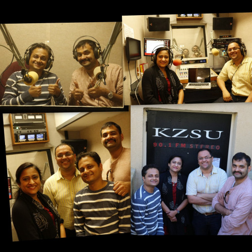

Art - The upcoming play by CalAA
In this ChaiTime we talk to director Aditya Kulkarni, and actors Abhay Pranajape and Avadhoot Bhambare about the CalAA’s 42nd production, “Art”. The play was originally written in French by Yasmine Reza and was adapted by Aditya Kulkarni for this production. Following are the timings for this play and tickets are available on www.calaaonline.com.
Sunday, April 10th, 2:00pm@Cubberley Theater, Palo Alto
Sunday, April 16th, 2:00pm@Front Row Theater, San Ramon
CalAA-California Arts Association is a fourteen-year-old organization founded by San Francisco Bay Area drama enthusiasts with a mission to produce and preserve creative performing arts. It aims at promoting experimentation while maintaining high quality.
CalAA is a ‘not-for-profit’ organization, which financially supports itself through net proceeds from its events. The actors and actresses, directors, producers, and all other talent come from the local volunteers who donate their time for CalAA. CalAA has major events planned around the year covering Dramas, Music and Dance programs, Video Screening of unique Movies and Teleplays, Weekly TV Show, Workshops and Seminars and a popular platform ‘CalAAnand’ for the enthusiasts within CalAA to present programs on a smaller scale.
CalAA has received accolades from the discerning audience for highly creative and top quality programs and has established itself in culturally active San Francisco Bay Area in very short period of time. CalAA is always looking for new talent and volunteers as well as suggestions for improvements.